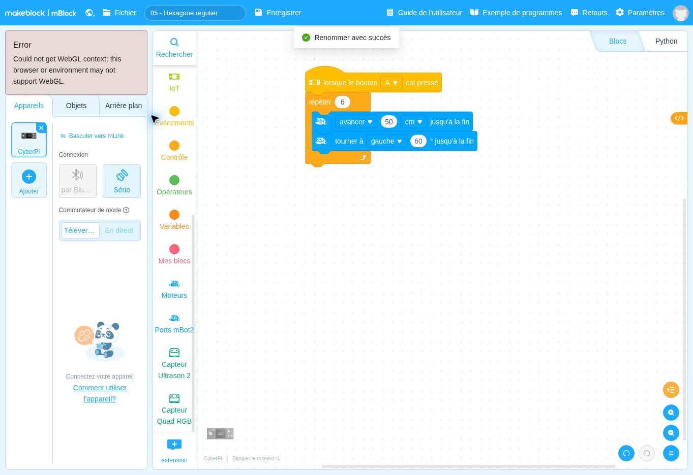

lorsque le bouton A ▾ est presséDépart
Ce que fait ce bloc : Bloc de départ : le programme se lance quand on appuie sur le bouton A du CyberPi, comme dans les fiches précédentes.
Pourquoi il est là : Vous choisissez le moment du départ.
Quel angle faut-il choisir pour une figure à six côtés ?
Avant de regarder le programme, écrivez en une phrase ce que vous pensez que le robot va faire. Lancement : Appui sur le bouton A du CyberPi.
Se tromper ici est utile : c’est ce qui fait apprendre.
Voici le programme en français. Les lignes décalées vers la droite sont à l’intérieur d’une répétition ou d’un choix.
Quand j’appuie sur A :
je répète 6 fois :
1. j’avance de 50 cm et j’attends d’avoir fini ;
2. je tourne de 60° et j’attends d’avoir fini.
DépartContrôleAction du robotInformationÉcranMémoireCalcul
Ce que fait ce bloc : Bloc de départ : le programme se lance quand on appuie sur le bouton A du CyberPi, comme dans les fiches précédentes.
Pourquoi il est là : Vous choisissez le moment du départ.
Ce que fait ce bloc : Répète six fois les blocs qui sont à l’intérieur.
Pourquoi il est là : Un hexagone a 6 côtés : le nombre de répétitions est égal au nombre de côtés.
Ce que fait ce bloc : Le robot roule tout droit sur 50 cm : un côté de l’hexagone.
Pourquoi il est là : Même rôle que pour le carré : tracer un côté.
Ce que fait ce bloc : Le robot pivote de 60° avant de tracer le côté suivant.
Pourquoi il est là : Pour faire un tour complet (360°) en 6 virages identiques, chaque virage fait 360 ÷ 6 = 60°. C’est la règle à retenir : angle = 360° ÷ nombre de côtés.
À savoir. Pour le carré : 360 ÷ 4 = 90°. Pour l’hexagone : 360 ÷ 6 = 60°.
Autres solutions : page Besoin d’aide ?
Changez un seul élément, prévoyez le résultat, puis vérifiez avec le robot.
Cette partie est réservée au formateur. Saisissez le code formateur pour l’ouvrir.
Code incorrect.